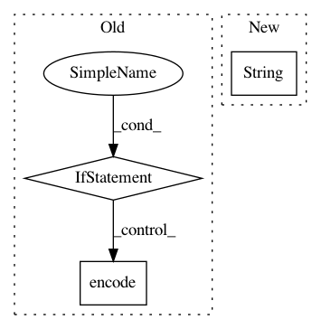

005be3f794c134d26fc9adb98c4dffcbccd33f89,tensorboard/plugins/interactive_inference/witwidget/notebook/visualization.py,WitConfigBuilder,_convert_json_to_tf_examples,#WitConfigBuilder#Any#,454
Before Change
for feat in json_ex:
if isinstance(json_ex[feat], (int, long)):
ex.features.feature[feat].int64_list.value.append(json_ex[feat])
elif isinstance(json_ex[feat], Number):
ex.features.feature[feat].float_list.value.append(json_ex[feat])
else:
ex.features.feature[feat].bytes_list.value.append(
json_ex[feat].encode("utf-8"))
tf_examples.append(ex)
return tf_examples
After Change
if feature_names and len(feature_names) > i:
feat = feature_names[i]
else:
feat = str(i)
self._add_single_feature(feat, value, ex)
tf_examples.append(ex)
else:
for feat in json_ex:
In pattern: SUPERPATTERN
Frequency: 3
Non-data size: 3
Instances
Project Name: tensorflow/tensorboard
Commit Name: 005be3f794c134d26fc9adb98c4dffcbccd33f89
Time: 2019-05-10
Author: jameswex@users.noreply.github.com
File Name: tensorboard/plugins/interactive_inference/witwidget/notebook/visualization.py
Class Name: WitConfigBuilder
Method Name: _convert_json_to_tf_examples
Project Name: austin-taylor/flare
Commit Name: 09357b15d782be174ca7d7709b4f22671c9faa85
Time: 2017-08-20
Author: github@austintaylor.io
File Name: flare/tools/whoisip.py
Class Name: WhoisLookup
Method Name: get_name_by_ip
Project Name: CyberReboot/poseidon
Commit Name: ea536bf2160a1428c7bad728db0f30d5de4ff812
Time: 2016-08-30
Author: tlanham@cs.stanford.edu
File Name: poseidon/poseidonStorage/poseidonStorage.py
Class Name: db_add_one_doc
Method Name: on_post